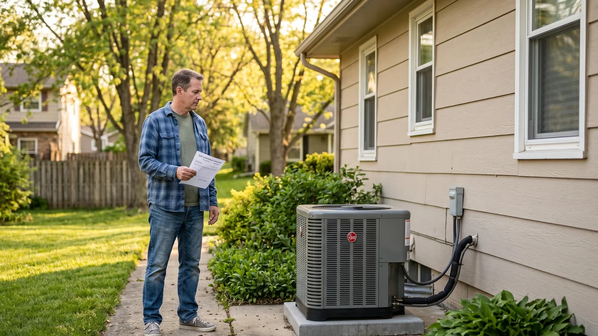

Advertising Disclosure: This site may receive compensation for service connections made through this page. Content is editorially independent.
Should you switch from a gas furnace to a heat pump in 2026? Probably yes if you live in IECC climate Zone 4 or below, have 200-amp electrical service, your furnace is 12+ years old, and your state's HEAR program is active. Probably no if you live in Zone 5+ without a cold-climate heat pump (CCHP) budget, your furnace is under 8 years old with warranty time left, your electric panel is 100-amp and a service upgrade isn't budgeted, or your local natural gas is significantly cheaper than electricity. The federal Section 25C tax credit was terminated for property placed in service after December 31, 2025 by OBBBA — a 2026 installation does NOT qualify for the federal credit. The HEAR rebate program ($8,000 maximum for heat pumps per DOE) continues but rolls out state-by-state, and eligibility depends on income bracket. This article is the decision framework, not a sales pitch — heat pumps are right for roughly 65% of U.S. homes and wrong for the other 35%, and the six questions below tell you which side you're on.
Your gas furnace is aging, your gas bill is climbing, your neighbor just installed a heat pump and won't stop talking about it, and contractors are quoting $12,000-$18,000 for a heat-pump replacement (per our 2026 HVAC Cost Guide). You need to know whether the math actually works for your specific home — not for "most homes," not for the case study in a manufacturer brochure, and not for the climate-action argument. The honest answer depends on six measurable inputs about your house, your market, and your electrical service. This article is the decision framework for working through them.
For the operating-cost comparison between an already-installed heat pump and an already-installed gas furnace, see our heat-pump-vs-gas-furnace article — that one covers which is cheaper to run on identical homes in identical markets. For the buyer's-guide question of which heat pump to install once you've decided to switch, the 2026 Heat Pump Buyer's Guide is the C3 pillar. For the broader repair-vs-replace decision (when to keep the existing furnace at all), the repair-or-replace framework is the C5 anchor. This article's unique territory is the upstream switch-or-stay decision — the question you answer before you start shopping for equipment.
Six Questions That Determine the Answer
The six inputs below produce a directional answer (probably yes / probably no / dual-fuel) within about 10 minutes of homework. Walk through them in order.
Question 1: What is your IECC climate zone?
The U.S. Department of Energy and the International Energy Conservation Code divide the country into climate zones from 1 (hot tropical) to 8 (subarctic). The zone is the single biggest determinant of whether a heat pump is the obvious choice, a borderline call, or a CCHP-required engineering project.
- Zones 1-3 (Hot, Mixed-Humid, Marine): Heat pumps win on operating cost in nearly every case. Coastal markets like Oakland, California, southern markets, and the Sun Belt are heat-pump natural fits. The cold-weather question barely applies — a standard ENERGY STAR heat pump (no CCHP certification needed) handles the local climate without resistance backup. Default answer: switch.
- Zone 4 (Mixed-Humid, the southeastern third of the country): Heat pumps usually win. Markets like Winston-Salem, North Carolina and Tulsa, Oklahoma have winters cold enough to make CCHP certification worth the modest upcharge, but not cold enough to demand it. A 2026 CCHP-certified inverter unit comfortably handles January cold snaps. Default answer: switch, with CCHP certification preferred.
- Zone 5-6 (Cold): CCHP certification is now mandatory, not optional. A non-CCHP unit installed in Zone 5+ leans heavily on resistance backup during the coldest weeks and pushes operating cost toward resistance-heat economics. Dual-fuel (heat pump + existing gas furnace) is often the lowest-operating-cost answer here. Default answer: CCHP-only OR dual-fuel, depending on goals.
- Zone 7-8 (Very Cold, Subarctic): Markets like Cheyenne, Wyoming at high elevation, northern-tier states, and subarctic regions are the hardest call. A CCHP works mechanically, but the balance point sits high enough that backup heat dominates runtime across multiple winter months. Dual-fuel is typically essential. Default answer: dual-fuel, or stay with gas if shell improvements aren't budgeted.
Question 2: What is the electricity-to-gas price ratio in your market?
U.S. residential electricity averaged 17.30 cents per kilowatt-hour in 2025 per EIA Energy Explained data, but the range is enormous — Hawaii at 35.72 cents per kWh and North Dakota at 8.20 cents per kWh sit at the extremes. Natural gas residential pricing similarly varies by region (roughly $0.80 to $2.50 per therm depending on production proximity, pipeline access, and utility regulation). Where you fall on both numbers determines whether heat-pump operation is cheaper or more expensive than gas heating per delivered BTU.
The rough math: at electricity around $0.14/kWh and gas around $1.50/therm (national-ish averages), a heat pump at COP 3.0 lands roughly equivalent to a 95% AFUE gas furnace on operating cost — the heat pump wins in shoulder seasons (COP 3.5+), the gas furnace wins in the deep cold (COP under 2.0). In a region with cheap electricity and expensive gas (parts of the Pacific Northwest, the Tennessee Valley utility-served markets), heat pumps pull substantially ahead. In a region with cheap gas and average electricity (much of the Gulf states, parts of the Midwest), the operating-cost gap narrows or reverses.
Pull your last 12 months of utility bills and calculate your actual per-unit cost (price per kWh, price per therm including all fixed charges divided across actual usage). A contractor or energy auditor can run the same calculation against the proposed heat pump's published HSPF2 (Heating Season Performance Factor) to produce a specific projected operating-cost number for your home. Without this calculation, you are guessing.
Question 3: How old is your gas furnace, and is it under warranty?
Replacing a functional, warranty-protected furnace with a heat pump rarely pays back within the heat pump's service life. Typical residential gas furnaces have a 15-20 year functional service life and a 10-year manufacturer warranty on the heat exchanger.
- Under 8 years old, no major repair history: Wait. The remaining furnace life is worth more than the rebate-adjusted heat-pump operating savings would recover before the next replacement cycle anyway.
- 8-12 years old, no major repair history: Marginal. Run the math on operating-cost differential vs. installation cost. In a heat-pump-favorable climate (Zone 1-4) with HEAR rebate eligibility, switching now usually pencils out. In a heat-pump-borderline climate (Zone 5+) without HEAR rebate, waiting is usually cheaper.
- 12+ years old or with major repair quoted: The replacement question is being forced. This is when the heat-pump-vs-replacement-gas-furnace question is most live, and when the operating-cost differential matters most relative to the incremental installation cost. The repair-or-replace framework covers the replacement-trigger math in detail.
- Furnace failed catastrophically or condemned (cracked heat exchanger, etc.): Replacement is happening regardless. Now it's heat-pump-vs-gas, not switch-or-stay.
Question 4: What size is your home's electrical service?
Modern cold-climate heat pumps with electric-resistance backup strips draw substantial current. The heat pump itself pulls 15-30 amps depending on capacity, and backup strips draw 30-60 amps per stage at 5-15 kW of total capacity. Adding this load to an already-loaded electrical panel often forces a service upgrade.
- 200-amp service or larger: Comfortable. Most newer homes (2000s build or later) have 200-amp panels with headroom for heat-pump + backup-heat additions.
- 150-amp service: Workable but tight. An electrician must perform a National Electrical Code load calculation; usually the heat pump fits without upgrade, but adding strip backup may push past the calculated capacity.
- 100-amp service: Borderline. Older homes (pre-1990s) often have 100-amp panels already loaded with range, dryer, water heater, and EV charging. Adding strip-backup heat at 5-15 kW typically requires a service upgrade. Budget $2,000-$5,000 for the upgrade per our cost guide, on top of the heat-pump installation.
- Dual-fuel workaround: Keeping the existing gas furnace as backup heat (instead of installing electric-resistance strips) eliminates the strip-heat electrical load entirely — the heat pump alone fits comfortably even in 100-amp homes. This is the standard recommendation when service-upgrade cost is a major factor.
Get connected with an independent HVAC technician who can run a Manual J for your home and price out the heat-pump-vs-gas options.
Call Now — (844) 582-1795Disclosure: We are a referral service and may receive compensation for qualified calls. Calls may be routed to an independent provider network and may be recorded. Pricing and availability vary by provider and location.
Question 5: Is your state's HEAR rebate portal active, and what's your income bracket?
The federal Home Electrification and Appliance Rebates (HEAR) program — formerly proposed as HEEHRA in the Inflation Reduction Act — provides up to $8,000 per home in heat-pump installation rebates. HEAR is federally funded but administered through individual state portals. As of 2026, rollout status varies by state: some states' portals have been live for months and are accepting applications; some are launching with restrictions on contractor enrollment; some are still pending administrative setup. The actual amount you receive depends on three things.
First, household income relative to your county's Area Median Income (AMI):
- Under 80% AMI (low-income): Eligible for up to 100% of project cost covered, capped at $8,000 for the heat pump.
- 80-150% AMI (moderate-income): Eligible for up to 50% of project cost covered, capped at $8,000.
- Above 150% AMI: Not eligible for HEAR (but may still qualify for state-level or utility-specific incentives).
Second, your state's portal status. Check the Department of Energy's home upgrades hub for current rollout status before assuming eligibility; the rebate amount, application window, and even active-vs-pending status vary by state.
Third, installer eligibility. HEAR rebates flow through enrolled contractors, not directly to the homeowner. The installer must be registered with the state HEAR program, and the equipment must meet program-specific efficiency thresholds (typically CCHP-certified or higher). When calling for quotes, explicitly ask "Are you a HEAR-approved installer in this state?" — an unapproved installer cannot process the rebate even on otherwise-qualifying equipment.
Question 6: Does dual-fuel make more sense for your climate?
The six questions above can all point toward "switch to a heat pump" while still leaving a meaningful choice: heat-pump-only (all-electric, all-strip-backup) versus dual-fuel (heat pump + gas furnace as backup). In cold climates, dual-fuel often wins on operating cost.
Dual-fuel configures the heat pump as the primary heating source for shoulder seasons and milder winter days (when COP is 2.5+ and operating cost is low), and the gas furnace as backup for the coldest weeks (when the heat pump would otherwise lean on expensive resistance strips). The thermostat switches between the two at a configured balance-point temperature (typically 25-35 degrees Fahrenheit outdoor). This lets each system run in its efficiency sweet spot.
Dual-fuel makes the most sense when:
- You're in Zone 5 or above (the deep-cold weeks meaningfully affect annual operating cost)
- Your existing gas furnace is functional and not at end-of-life (you keep it; you don't replace it)
- Electrical service constraints make full-electric backup impractical
- You want lower operating cost without committing to a gas-free home today
All-electric heat-pump installation makes more sense when:
- You're in Zone 1-4 (mild climate, the deep-cold contribution to annual heating is small)
- The existing gas furnace needs replacement anyway (you're not avoiding furnace cost)
- Decarbonization or going completely off-gas is a personal priority
- Electrical service is 200-amp+ with comfortable headroom
When the Answer Is Honestly "Stay With Gas"
Most heat-pump content online is written by people selling heat pumps. A referral aggregator's incentive is different: we'd rather connect a homeowner to a confident decision than to an installation they regret. Four scenarios where staying with gas is the right answer.
Your furnace is under 8 years old with warranty time left and no major repairs needed. Replacing a functional, warranty-protected furnace early to capture operating-cost savings rarely pays back within the heat-pump's own service life. The premature replacement also wastes the embodied carbon in the existing equipment (an under-appreciated cost in the decarbonization argument). Wait until the furnace is in the natural replacement window (12+ years old, or a major repair forces the decision).
You're in Zone 6+ without a CCHP-grade installation budget, AND no dual-fuel option. A budget heat-pump (HSPF2 7.5, no CCHP certification) in a Zone 6+ home produces a high balance point (25-35 degrees Fahrenheit) and leans on resistance backup for multiple winter months. The operating cost converges with electric-resistance heat economics, which in cold climates is meaningfully more expensive than gas. If the CCHP upcharge ($3,000-$6,000 over standard) doesn't fit the budget AND you don't want to keep the gas furnace as dual-fuel backup, staying with gas is the honest answer.
You're in a cheap-gas region with cap-rate electrical service. Some markets (parts of the Gulf states, parts of the Midwest near production fields) have residential natural gas under $1.00/therm and average-to-expensive electricity. Combined with a 100-amp electrical service that would need a $3,000+ upgrade for full-electric strip backup, the all-in switch cost can exceed the operating-cost savings across the equipment's lifetime. Dual-fuel salvages the case sometimes; sometimes it doesn't.
You're moving in 3-5 years. Heat-pump payback periods typically run 7-15 years depending on climate and rebates. If you're planning to sell before the payback completes, you're funding the next owner's savings. The right move is usually to maintain the existing furnace and let the next owner decide on their own timeline. (Exception: in heat-pump-favorable markets, the installed heat pump can add resale value — consult a local agent on the resale-value question for your specific market.)
The 2026 Federal Picture: 25C is Gone, HEAR is Variable, States Add More
The federal incentive landscape changed materially on January 1, 2026. The Section 25C Energy Efficient Home Improvement Credit — which covered up to $2,000 per year on heat-pump installations through December 31, 2025 — was terminated by the One Big Beautiful Bill Act (OBBBA, Public Law 119-21) for property placed in service after that date. A heat-pump installation completed in 2026 does NOT qualify for the federal 25C credit.
What remains:
- HEAR rebates (up to $8,000 per heat pump, state-administered, income-bracket-dependent — the main federal incentive still active in 2026)
- State-level incentives — many states stack additional rebates or tax credits on top of HEAR; check your state's energy office
- Utility incentives — investor-owned utilities and many municipal utilities offer heat-pump-specific rebates (often $500-$1,500 per installation); check your utility's website
- Section 25D Residential Clean Energy Credit for geothermal heat pumps (a different product than air-source heat pumps; covers ground-source installation through a separate IRS provision)
⚠️ Tax and rebate caveat: The federal-credit and HEAR-rebate information here is general guidance, not tax advice. Eligibility, rebate amounts, income brackets, AMI calculations, and state HEAR portal status change frequently — confirm current status with your state energy office's DSIRE listing, the installer running your quote, and a qualified tax professional before relying on any specific rebate amount in your purchase decision.
What to Ask Before Signing a Heat-Pump Quote
Four questions separate a competent heat-pump quote from a generic install-it-anywhere pitch. Ask all four before signing anything.
"Will you share the Manual J load calculation?" Manual J is the ACCA-standardized residential heat-loss and heat-gain calculation that determines correct equipment sizing. A reputable contractor produces a Manual J before quoting, and is willing to share the inputs (square footage, ceiling height, window types, insulation values, infiltration rate) and the resulting load number. A contractor who quotes equipment without doing a Manual J is using a rule-of-thumb (often "1 ton per 500 square feet") that is unreliable. Ask for it; a competent installer welcomes the question.
"What is the HSPF2 rating, and is it CCHP-certified?" HSPF2 (Heating Season Performance Factor, 2023 revision) is the cold-weather efficiency rating. Minimum-efficiency 2026 units land around HSPF2 7.5; mid-tier units around 8.5; ENERGY STAR Cold Climate Heat Pump certified units at HSPF2 10.0 or higher. For Zone 5 and above, CCHP certification should be non-negotiable. A contractor pitching a non-CCHP unit for a Zone 5+ home is either under-quoting on price or under-quoting on engineering — ask for both options and the operating-cost math.
"Are you a HEAR-approved installer in this state, and what's the rebate process?" HEAR rebates flow through enrolled contractors. An unapproved installer cannot process the rebate even on otherwise-qualifying equipment. A competent contractor in a HEAR-active state knows their enrollment status, your eligibility category, and the timeline for rebate processing. If the answer is "we don't deal with rebates — you handle that yourself," that's a non-starter for HEAR — the rebate processes through the installer or not at all.
"What's the backup-heat plan?" All-electric with strip backup? Dual-fuel keeping the existing furnace? Strip-only sized for which balance point? The right backup plan depends on your climate zone, electrical service, and operating-cost priorities — the contractor's answer should be specific to your home, not generic. If the answer is "we always do strip backup," they're not engineering for your specific situation.
Climate Context: How Geography Tilts the Decision
Three concrete markets to illustrate how the same six questions produce different answers in different climates.
Oakland, California (coastal, mild winters, Zone 3C): Heat-pump installation is the obvious answer. Winters rarely drop below 40 degrees Fahrenheit, so the heat pump runs at high COP year-round and resistance backup is essentially unused. Standard ENERGY STAR heat pumps (no CCHP needed) handle the climate. California also has aggressive utility incentives stacking on top of HEAR. The decision-tree answer for most Oakland homeowners with aging gas furnaces: switch.
Winston-Salem, North Carolina and Tulsa, Oklahoma (mixed-humid, Zone 4): The interesting middle. Winters drop into the teens occasionally, summers run 90+ for months, and electricity-vs-gas pricing varies by utility territory. A CCHP-certified inverter unit handles the local climate comfortably; dual-fuel is overkill for these zones unless the existing gas furnace is already serviceable. HEAR rollout in North Carolina and Oklahoma has been ongoing through 2026 — check current portal status before assuming eligibility. The decision-tree answer for most homeowners in these markets with aging gas furnaces: switch to a CCHP-certified all-electric setup, unless the home is leaky and resistance backup would dominate.
Cheyenne, Wyoming (mountain, high-elevation cold, Zone 5B): The hardest call. Winters routinely drop below zero degrees Fahrenheit, the city sits at 6,000 feet elevation, and cold-snap events compound. A budget heat pump installation here drives operating cost toward resistance-heat economics for multiple winter months — the install only works with CCHP certification AND a credible cold-weather sizing plan. Dual-fuel is often the lowest-operating-cost answer (heat pump for shoulder seasons and milder winter days, gas furnace for the deep cold). Wyoming HEAR rollout status varies by year — confirm before assuming. The decision-tree answer for most Cheyenne homeowners: dual-fuel CCHP if the existing furnace is mid-life and gas service is in place; defer the switch until the furnace fails if the budget for CCHP + dual-fuel install isn't there.
Trusted Industry Sources
The decision framework, rebate references, and engineering claims in this article are consistent with published guidance from:
- IRS — Energy Efficient Home Improvement Credit (Section 25C)
- U.S. Department of Energy — Home Upgrades (HEAR rebate program)
- U.S. Energy Information Administration — Electricity Prices
- ENERGY STAR — Clean Heating and Cooling (Heat Pump certification + CCHP)
- ACCA — Technical Manuals (Manual J load calculation)
- EPA — Section 608 Technician Certification
A technician can assess your home, run the Manual J, and walk you through the heat-pump-vs-stay-with-gas math for your specific climate and panel.
Call Now — (844) 582-1795Disclosure: We are a referral service and may receive compensation for qualified calls. Calls may be routed to an independent provider network and may be recorded. Pricing and availability vary by provider and location.
Frequently Asked Questions
Probably yes if you live in IECC climate Zone 4 or below, have 200-amp electrical service, your gas furnace is 12 or more years old, and your state's HEAR rebate portal is active. Probably no if you live in Zone 5 or above without a cold-climate heat pump (CCHP) budget, your furnace is under 8 years old with warranty time left, your electrical panel is 100-amp with no service-upgrade budget, or your local natural gas is significantly cheaper than electricity per regional data. The decision turns on six specific inputs: climate zone, the electricity-to-gas price ratio in your market, furnace age, electrical panel capacity, HEAR rebate eligibility, and backup heat strategy. The federal Section 25C tax credit was terminated for property placed in service after December 31, 2025, so a 2026 heat-pump installation does not qualify for that credit — but the HEAR rebate program (up to $8,000) continues and rolls out state-by-state.
Heat pumps work most efficiently in IECC climate Zones 1 through 4 (Hot, Mixed-Humid, Marine, and the warmer half of Mixed-Humid) — coastal markets like Oakland, California; mixed-humid markets like Winston-Salem, North Carolina and Tulsa, Oklahoma; and warm-southern markets are heat-pump natural fits without aggressive cold-weather engineering. Zone 5 and above (Cold and Very Cold) require a cold-climate heat pump (CCHP) — an ENERGY STAR-certified unit engineered for low-temperature operation around 5 degrees Fahrenheit outdoor — to avoid leaning heavily on electric-resistance backup heat during the coldest weeks. In Zone 6 and above, a dual-fuel configuration (heat pump for shoulder seasons and mild winter days, gas furnace as backup below the balance point) is often the lowest-operating-cost option.
No. The IRS Section 25C Energy Efficient Home Improvement Credit was terminated for property placed in service after December 31, 2025 by the One Big Beautiful Bill Act (Public Law 119-21). Heat-pump installations in 2026 do not qualify for the federal 25C credit. For homeowners who installed qualifying heat pumps by December 31, 2025, the credit (maximum $2,000 per year for heat pumps; $3,200 total annual cap) can still be claimed on the 2025 tax return. For 2026 installations, the remaining federal incentive is the HEAR rebate program (state-administered, income-bracket-dependent), along with state and utility incentives that vary by location.
HEAR (Home Electrification and Appliance Rebates) provides up to $8,000 per home for a heat-pump installation, per Department of Energy guidance. The actual rebate amount depends on household income (low-income households under 80% Area Median Income qualify for the full rebate covering up to 100% of project cost; moderate-income households 80-150% AMI qualify for partial rebate up to 50% of project cost; households above 150% AMI are not eligible). HEAR is federally funded but state-administered — the rebate flows through each state's HEAR portal, and rollout has been staggered across 2024-2026 as states stand up their administrative infrastructure. Check the Department of Energy's home upgrades hub for your state's current portal status before assuming eligibility; the rebate amount, eligibility window, and even active-vs-pending status vary by state.
Not necessarily, but 200-amp service is the typical comfortable floor for a modern cold-climate heat pump (CCHP) with electric-resistance backup strips. The heat pump itself typically pulls 15-30 amps depending on capacity, and backup-heat strips draw 30-60 amps per stage. Homes with 100-amp service can install heat pumps, but the existing electrical load (range, dryer, EV charger, water heater) often leaves insufficient headroom for backup strips at 5 to 15 kilowatts of capacity. An electrician must perform a load calculation per the National Electrical Code; if the existing 100-amp service is near capacity, a service upgrade to 200-amp typically runs $2,000-$5,000 per regional installation pricing (see our cost guide). A dual-fuel configuration that keeps the existing gas furnace as backup heat avoids the strip-heat load entirely, which is one practical workaround for homes with constrained electrical service.
A cold-climate heat pump (CCHP) is a heat pump engineered to maintain useful heating capacity at low outdoor temperatures — specifically the ENERGY STAR Cold Climate Heat Pump certification establishes a published low-temperature performance specification that certified units must meet around 5 degrees Fahrenheit outdoor. CCHPs use variable-speed (inverter) compressors that ramp up at low outdoor temperatures, vapor-injection or two-stage compression to boost capacity, and refrigerants (R-32 or R-454B) with better low-temperature thermodynamic behavior than older R-410A. A non-CCHP heat pump from a 2015 catalog loses most of its heating capacity below 25 degrees Fahrenheit; a 2026 CCHP keeps producing useful heat below 0 degrees Fahrenheit. CCHP certification matters because it is the single specification that determines whether a heat pump is appropriate for cold-climate (Zone 5 and above) installation. The cold-weather heat-pump physics explainer covers the engineering in detail.
It depends on your climate, electrical service, and operating-cost priorities. A dual-fuel system pairs a heat pump (for shoulder seasons and milder winter days when COP is high) with a gas furnace (for the coldest weeks when the heat pump's COP drops below 2.0 and resistance backup would dominate). In Zone 5 and above, a dual-fuel configuration is often the lowest-operating-cost option because it lets each system run in its efficiency sweet spot. It also avoids the electrical-service upgrade many homes need for full-electric heat pumps with strip backup. The trade-off is that dual-fuel keeps the gas connection and gas-burning equipment in service, so it does not eliminate gas dependency — if decarbonization or going completely off-gas is the priority, an all-electric CCHP installation is the right call (typically requires shell improvements and possibly an electrical-service upgrade to do well). In mild and mixed-humid climates (Zones 1-4), all-electric heat pump alone often wins; in cold climates (Zones 5-7), dual-fuel often wins on cost; in subarctic (Zone 8), dual-fuel is typically essential. For the full operating-cost math on either configuration, see our heat-pump-vs-gas-furnace article.
Local HVAC Service Areas
Cool Call Pro connects homeowners with independent HVAC technicians nationwide. Find a pro in Oakland (CA), Winston-Salem (NC), Tulsa (OK), or Cheyenne (WY), or browse by state: California, North Carolina, or all locations.